While lecture courses could be moved to online mode with some effort, laboratory courses presented a formidable challenge. Given the duration over which laboratories would be inaccessible to students, there was a real danger that many students might go through their entire degree course without any hands-on lab experience at all. This needed an innovative solution, and in very short time indeed. Fortunately, the seeds for the solution were sown almost a decade ago, when WEL had developed dedicated boards for laboratory courses which students could take to their hostels and carry out experiments using nothing but these boards and their laptops.
The COVID-19 pandemic continues to disrupt lives well into CY 2021. At the Department of Electrical Engineering at IIT Bombay, we recognised the impact of being away from campus on the learning experience for students when it comes to practical courses, and we set about thinking of ideas to offer students hands-on learning opportunities, despite the challenges. An idea for conducting labs in massive open online course (MOOC) mode emerged in October 2020, when the country was beginning to emerge from lockdown and companies were slowly resuming business.
At the Wadhwani Electronics Lab, the groundwork for this experiment had been laid out many years ago, with in-house made lab kits being used by students to perform laboratory exercises in WEL. Three months before the commencement of the Spring 2020–21 semester, we set an ambitious target for ourselves, never attempted before in the history of the institute — to conduct two laboratory courses, digital systems and microcontrollers, in MOOC mode, by shipping the necessary hardware to students at their homes.
Back in October 2020, this meant that in the next three months WEL would need to get more than 250 boards manufactured, test all hardware, and ship more than 500 boards to students and teaching assistants all over India. The team at WEL sourced components from local and online vendors, got PCBs fabricated and explored several options for board partners to get the PCBs assembled. This required an immense amount of dedication, hard work and precise coordination to ensure that this massive project was completed in time.
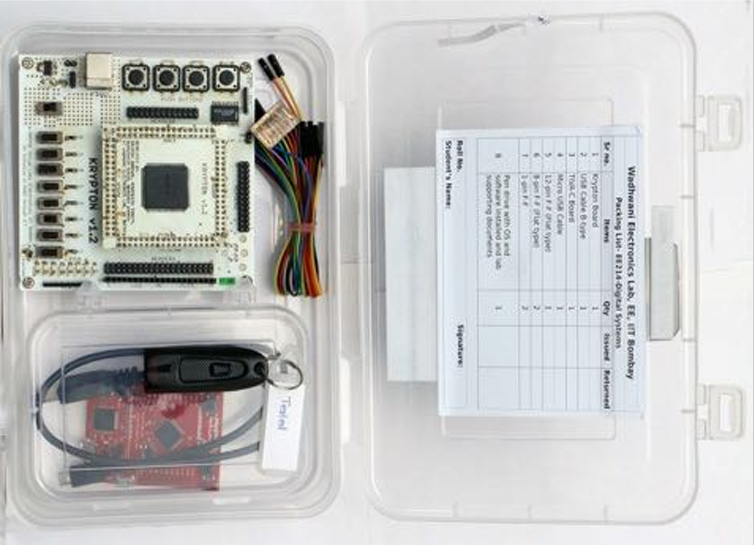
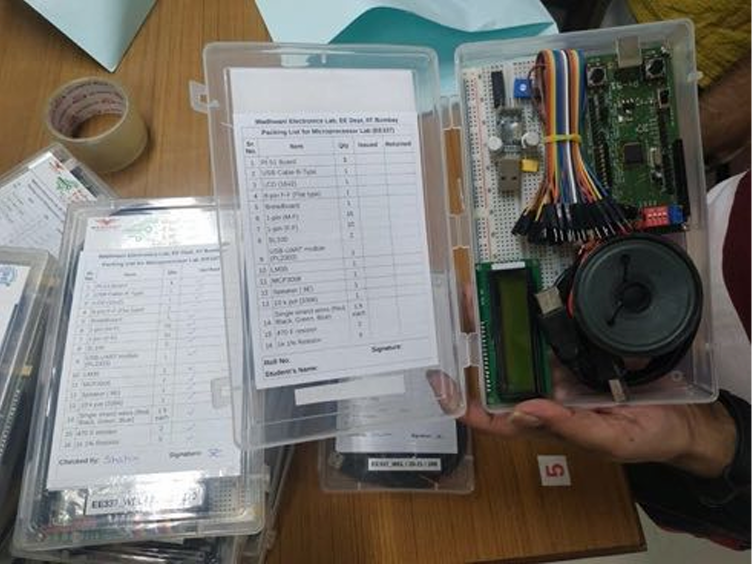
The WEL team rose to the challenge, and got all the hardware ready by December 2020. To avoid inconvenience to students who may run into software and PC/OS compatibility issues, the team also prepared bootable USB drives, sent to each student along with the kits.
The courses commenced in the Spring 2020–21 semester and progressed smoothly. Hardware kits were sent to students via speed post well before the targeted deadline of 26 January 2021. Lab courses were operated on the MS Teams platform, with TAs and staff helping students resolve their doubts and queries and debug hardware issues live during the sessions, which would sometimes extend beyond the scheduled slot in the timetable. Pre-recorded video lectures and tutorials supplemented the content. Only a handful of boards — fewer than ten — had to be replaced in the entire semester.
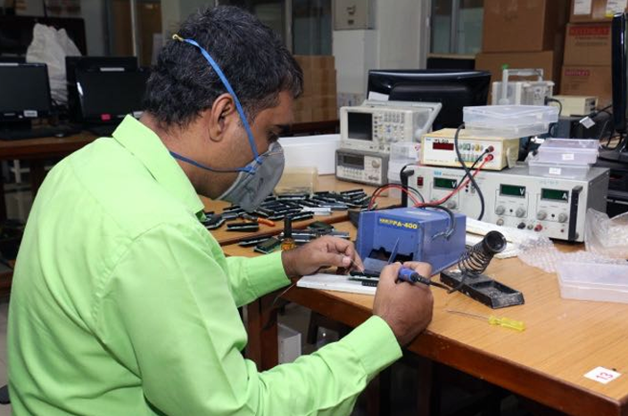
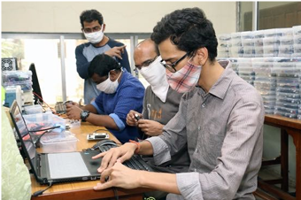
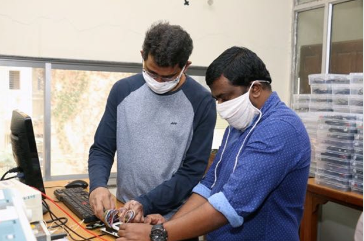
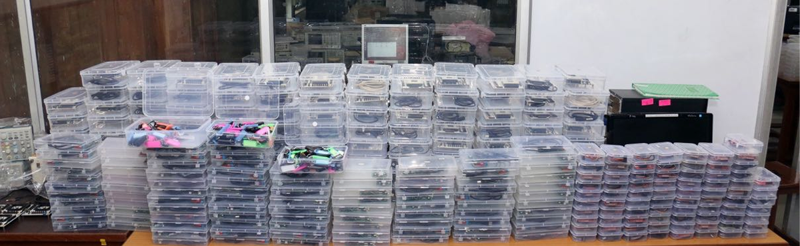
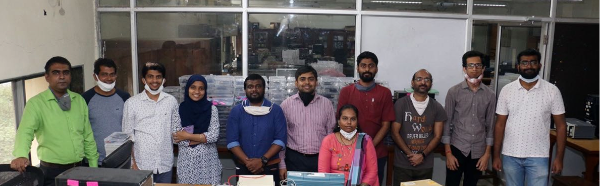
In the digital systems lab, problem statements were posted a few minutes before the commencement of the corresponding lab session, and students had to independently work on the problem statement during the lab slot, with TAs and staff available to answer questions and help with debugging. Two practical exams were also conducted flawlessly. The microcontroller lab course had students working on different questions of similar complexity in every lab turn. There was also a project component, which the students could work on independently using the hardware available with them.
… in my opinion conducting remote labs using our indigenously designed and fabricated cards has been a huge success… there was a marked difference in student confidence about topics related to 8051 as compared to other processors which were not included in the lab. In informal discussions, many students appreciated access to the hardware.
While formal course feedback is awaited, one student had this to say about the exercise:
The course was amazing. The effort put by the instructor and TA was exceptional. When the lab was announced to be held in an online sem I was upset that it wouldn't be fun as an offline lab. But it turned totally the other way. This was way beyond expectations of what I could do at home in an online lab. Everyone was considerate and helpful. The course didn't feel like a burden but was enjoyable. I am really grateful for making the otherwise boring life of only studying theory exciting with these really fun labs.
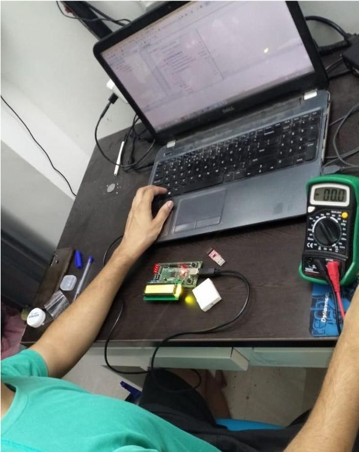
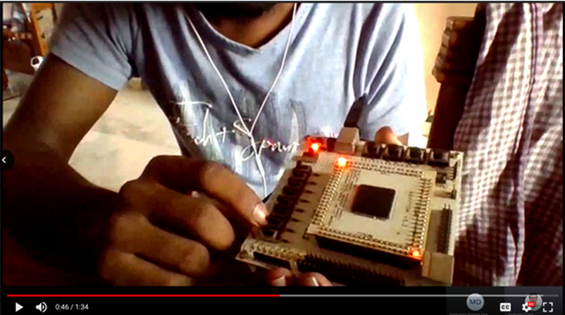
Based on this experience of conducting online laboratory courses, WEL took up another novel initiative — extending this experience to non-IITB students through two summer workshops, one for each course, conducted in partnership with NPTEL in June–July 2021. NPTEL reached out to institutes within the SWAYAM-NPTEL Local Chapter cohort for registrations. Through this pilot, we hope to lead by setting an example, and help transform the way Electrical Engineering is taught in India, with increased emphasis on hands-on active learning.
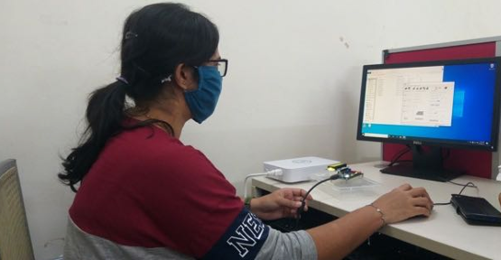
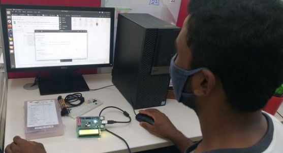
Separately, we received a request from IIT Dharwad, through Prof. Naveen Kadayinti, an IIT Bombay alumnus, for establishing a similar mechanism for conducting a microcontrollers lab. WEL donated a few boards to enable IIT-DH TAs to get trained on them, and assisted with board fabrication and testing. WEL continues to work on developing more hardware and software resources to enable other courses to also be conducted in MOOC style, and we hope to soon be able to expand the scope of such activities.